Novak Djokovic's Forehand: A New Synthesis¶
John Yandell¶
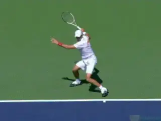
Djokovic: the grip of Nadal, the court position of Federer.
What's the most effective weapon at the moment in pro tennis? That's probably impossible to answer, but Novak Djokovic's forehand is right up there.
It's a huge part of the reason for his success. It is also a fascinating stroke when you take a close look at it in our new high speed, high definition video. (link to study it for yourself in the High Speed Archives.)
Close analysis shows that what Djokovic does is quite different from how it might appear on television, and also different in key respects from other elite players. In some ways, his forehand is a surprising combination of elements in the forehands of Roger Federer and Rafael Nadal. But other elements are significantly different from the forehands of these other two great players.
When you look at the high speed video, the most surprising element is probably Novak's grip. This may be hard to believe, but his hand is actually farther under the handle than Nadal. Yes, more western than Nadal. Djokovic probably has the most extreme grip among the world's top players.
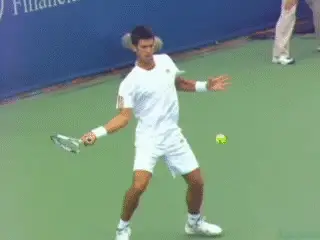
His hitting arm, torso rotation, and finishes help make Novak unique
You wouldn't necessarily suspect this watching him play on television because, he positions himself like Roger Federer, staying close to the baseline and taking the ball early. His spin levels are also almost identical to Roger and he appears to hit on very similar relatively flat trajectories.
So Djokovic has the grip (or a more extreme version of the grip) of the greatest defensive player in the game, yet he plays in a similar style to the greatest offensive player.
But other elements in his forehand are unlike either Nadal or Federer. His extreme torso rotation for one thing, and his predominant use of old style over the shoulder finishes, for another.
And then there is his use of the double bend hitting arm structure - the opposite of the straight arm forehands of Roger and Rafa. And what is going on with that backswing which turns the face of the racket to the back fence?
The way Djokovic combines technical elements challenges many of the assumptions players and coaches make about how high level forehands work in the pro game. When we study it closely, it shows that the options for developing a great forehand are even more varied than we have described in multiple other Advanced Tennis forehand articles. (link). And that is a lot of options.
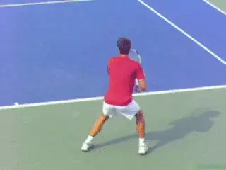
What is happening with that backswing?
In this series of articles, let's analyze the core components, and also, the variations in Djokovic's motion. This will put us in the position to see what other players at all levels can learn from him and apply in their own games.
In this first article, we'll talk about his grip and playing style. Then we'll turn to the start of the preparation. In the second article we'll also go into more detail about the role of footwork in initiating the motion than we have in the past, and hopefully bring some clarity to this important, confusing, and highly debated topic.
Subsequently, we'll look at the completion of the preparation, Novak's unique backswing, his use of the legs, the stances, his hitting arm position and how he sets up the start of the forward swing.
Next we'll turn to the forward swing itself, including his torso rotation, his contact point and contact height, his unusual use of the windshield wiper action, the amount of wiper rotation, and the variations in his finish positions.
We'll do all this by looking at our incredible new high speed high definition footage, available only on TPA. Sound like a lot? It is! And that's what it takes to really understand what is happening in this amazing complex and dynamic stroke. All along we'll ask the question: how do these creative combinations apply to the average player, if at all?
At the end your conclusion may be the same as mine. There isn't necessarily any one way or better way to put all the technical factors together, at least in the pro game. Great players synthesize the elements for themselves, usually by instinct. It's the players who evolve the new technical paradigms and the coaches who struggle to understand them and figure out how they may apply in coaching.
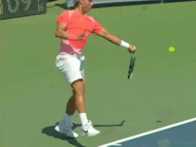
Do these strokes look really, really different?
A Little Background
As we have seen many times before, there are a multitude of technical elements in the modern pro forehand. (link) These elements are combined in myriad ways by different players. They are also combined by the same players in myriad ways at different times.
This is what makes it so difficult to talk about "the forehand" for a given player, much less talk about "the forehand" in the modern game. This is also why players, coaches, and analysts make generalizations that misrepresent or over simply what actually happens, either missing the range of variations, or identifying more extreme variations as the norm.
What are the specific elements that make the pro forehand so complex and difficult to understand? First there is an extremely wide range of grips (link) and an even wider range of backswings, backswings which are virtually unique to every player. (link.)
Players play from a huge range of depths on the court and with a huge range of contact heights. They use several variations of open stance but use neutral stances as well. Not to mention running stances which can be open or can be closed with a lunging cross step taken either before, during, or after contact.
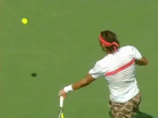
A wide range of finishes with various degrees of hand and arm rotation.
Forehand ball speeds can reach over 100 mph, but are sometimes around half that. Spin levels can vary as much as 500% from ball to ball, in a range from about 1000rpm up to around 5000rpm.
Players use different hitting arm positions. Some players use different hitting arm positions on different balls. Players use different amounts of body rotation, and the same players use different amounts of body rotation on different balls.
There is a huge variety of finishes: finishes that are longer or shorter or higher or lower. There are finishes that are over the shoulder, around the shoulder, around the torso, or "reversed," coming back over the player's head to the same side of the body where the swing began.
All of these finishes can use greater or lesser amounts of hand and arm rotation - the so-called windshield wiper effect. (link.) But there are no absolute correlations between the finishes and either the spin rates or the shot trajectories.
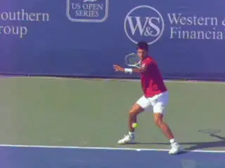
Novak breaks the paradigm on or near the baseline with his radical grip.
And all that is what makes the shot so creative. Mixing all these elements in different ways at different times against different opponents on different surfaces, pro players vary pace, arc, depth, spin, and angle in something approaching an infinite number of combinations.
Novak Unique?
In the past we have looked closely at these elements in general, and specifically in the forehands of Federer (link) and Nadal. (link) When we look at Djokovic, he combines elements of these players that previously appeared to be incompatible.
Past articles have found that certain factors are naturally related in the modern forehand: grip, court position, and contact height. And that's still predominantly correct.
Although all great players can play balls from everywhere on the court, in general we have found that the more extreme the grip, the deeper the normal court position and the higher the contact height. Djokovic breaks this paradigm.
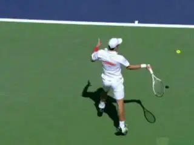
Novak hits with a double bend, not the straight arm of Rafa or Roger.
Grip
Based on where he stands in and how he often takes the ball on the rise, you would naturally assume Djokovic is playing with a much more conservative grip, and this is why it is hard to believe how far under the handle he actually is.
To understand this, let's review some basic points on grips. On TPA we've developed a system to understand the range of possible forehand grips at all levels. This is based on an understanding of the bevels on the racket, and then, how players align the racket hand with these bevels. Counting from the top and going down and to the right, there are actually 8 bevels on a racket handle. The grip is determined by how the player aligns theses bevels with two key reference points.
These are the index knuckle and the heel pad. When you look closely, you see players sometimes align these points squarely on the bevels, but as frequently, they align them on the edges between.
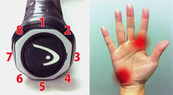
How do the two key points on the hand align with the racket bevels?If you want to describe the forehand grip accurately, it's not enough to say, "eastern," or "semi-western," or "western." Those terms are too imprecise. Depending on the position of the hand on the handle, there are at least 10 possible different forehand grips that span the range between "east" and "west." And everyone of them is probably used by some pro player.
The grips are not locked completely in stone, and the players may vary them slightly on a given day or a given court surface, although it's hard to say whether this might be intentional. But whatever that answer is, the variations in ranges are quite small and the general orientation of the hand on the racket is the bedrock in developing stroke production.
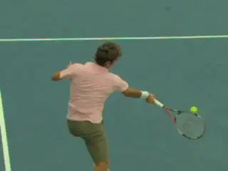
Whatever the slight variations, Federer has most of his hand behind the handle.
For example, Roger Federer's index knuckle and heel pad are both on or near the third bevel from the top. Sometimes his knuckle appears to be squarely on bevel 3 but most of the time, it looks like it's a half bevel down. With our terminology that makes Federer's grip a 3 / 3 or more usually a 3 1/2 / 3. Basically this means that most of his hand is behind the racket handle.
In contrast, Nadal's index knuckle is on bevel 4, the next bevel down. His heel pad is also on bevel 4, or maybe the edge between bevel 4 and bevel 5. So Nadal is a 4 / 4, or maybe a 4 / 4 1/2 .
What about Djokovic? His index knuckle is at least a half bevel further under the handle than Nadal. It appears to be on the edge between bevel 4 and bevel 5, or maybe even further, verging on fully underneath.
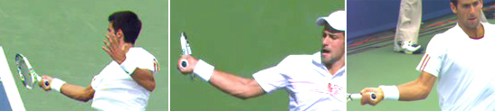
Novak's heel pad is on bevel 4 or maybe even slightly further underneath.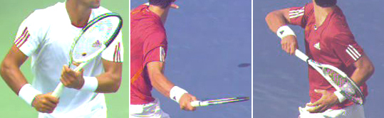
Novak's index knuckle appears to be on the edge between bevel 4 and bevel 5, or maybe even shifted slightly further.As for his heel pad, it's at least as far under as Nadal, on bevel 4 or maybe on the edge between bevel 4 and bevel 5. So that's makes Djokovic a 4 1/2 / 4, or maybe as much as a 5 / 4 1/2.
Whatever the case, that's just a shade off a "full western" grip. In our terminology that would be a 5 / 5, with both the index knuckle and the heel pad fully on the bottom bevel. The fact is that Djokovic probably comes closer to a true western than any player on the current tour.
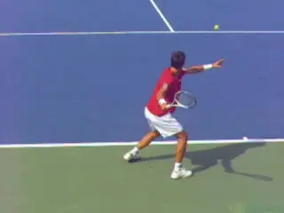
Another look at the aggressive court position.
But now try to reconcile that with where he plays on the court! Nadal typically plays back 10 feet behind the baseline--sometimes more--exploding up into the air and taking the ball at shoulder height.
Although he can play balls from anywhere at any height and is a great defender, Djokovic's preferred court position is relatively close to the baseline. He often takes the ball on the rise, making contact at waist to mid torso level--again more like Federer, a player whose grip is at the opposite far end of the spectrum.
Looking closely at about 50 forehands in our high speed footage, I found that Novak played almost half of them no more than 3 feet behind the baseline and many of those were even closer in hit with his feet touching or right behind the line.
Another quarter of the forehands I looked at were hit from around 5 feet back. He definitely plays balls from 10 feet behind and deeper, but this was a minority percentage, usually occurring when he was forced back by circumstances in the exchanges.
When we look at his spin rates, we see that there is another major similarity with Federer. An analysis of the spin levels on over 50 forehands, shows that Djokovic averaged 2800rpm, compared to Federer's 2700rpm. The range for Djokovic was also very similar to Roger, 1500rpm to 4200rpm, compared to Federer's range which was 1400rpm to 4500rpm.
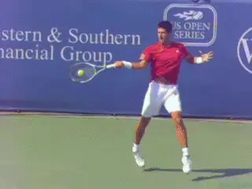
Spin rates like Roger, but with a different grip and different finish.
But again the differences! It is widely believed that the exotic finishes--either the windshield wiper finish around the torso or the reverse finish over the head--are the keys to generating heavy spin. Yet Djokovic is matching Roger Federer on spin level using predominantly the old style over the shoulder finishes.
Of the forehands I looked at, he finished over the shoulder more than twice as many times as he wrapped around the torso with the wiper. Interestingly there was no obvious correlation in the amount of spin and the type of finish. Although he hit many heavily spun wipers, Djokovic also generated up to 4000rpm or more with this allegedly "flat ball" over the shoulder.
So an extreme grip, a tight baseline position, a double bend hitting arm position, all using a finish many coaches consider on its way to extinction in the modern game! And similar spin levels to Roger Federer, the king of wiper spin.
How do we explain all this? The answer is that it shows the incredible flexibility and variety in the modern forehand. And the mystery.
Let's see what we can see about how exactly Novak hits this amazing shot. In the second article, also published in this issue, we'll start by looking at the beginning of the preparation, or the Unit Turn, and pay particular attention to the role of the feet in initiating the stroke. Read on!

John Yandell is widely acknowledged as one of the leading videographers and students of the modern game of professional tennis. His high speed filming for Advanced Tennis and TPA have provided new visual resources that have changed the way the game is studied and understood by both players and coaches. He has done personal video analysis for hundreds of high level competitive players, including Justine Henin-Hardenne, Taylor Dent and John McEnroe, among others.
In addition to his role as Editor of TPA he is the author of the critically acclaimed book Visual Tennis. The John Yandell Tennis School is located in San Francisco, California.
← The Straight-Elbow Hitting-Arm Position | Advanced Tennis Index | Start of the Preparation →